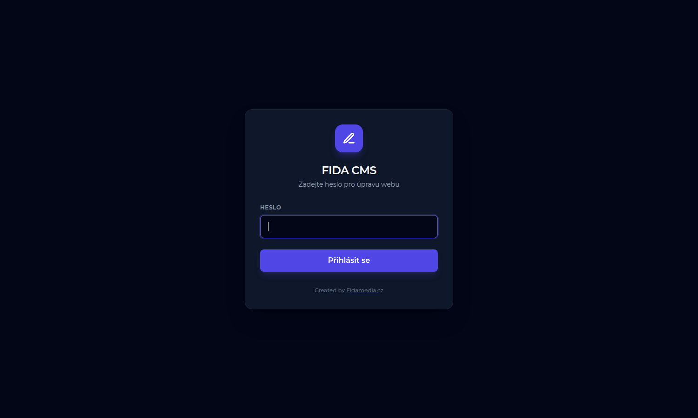
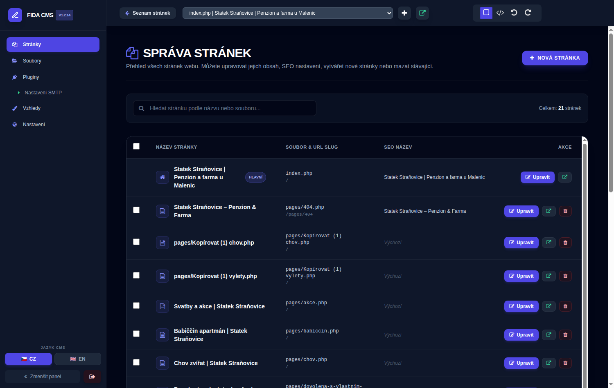
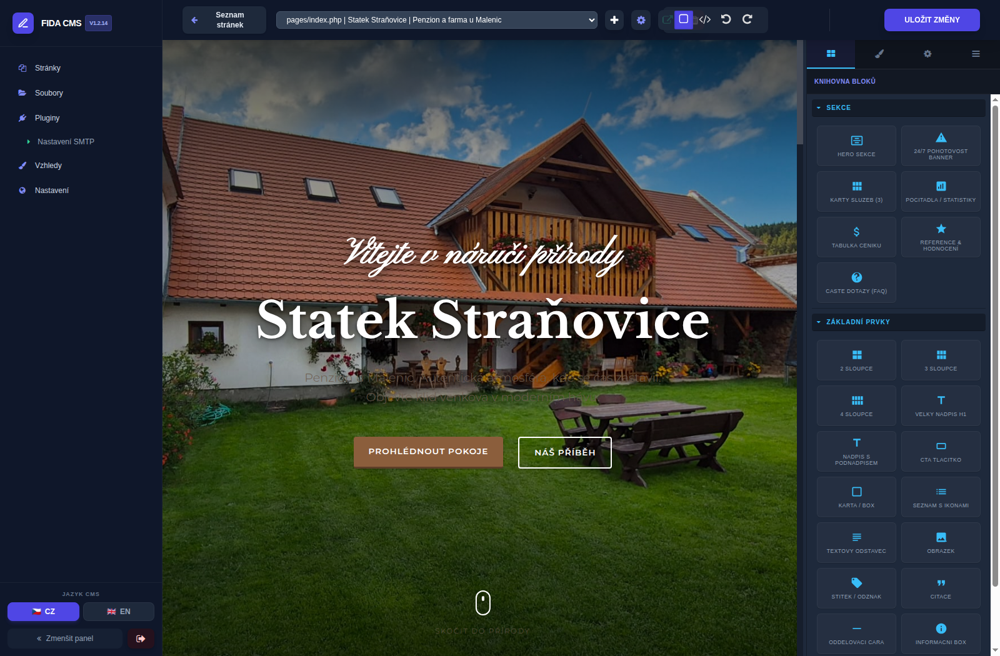
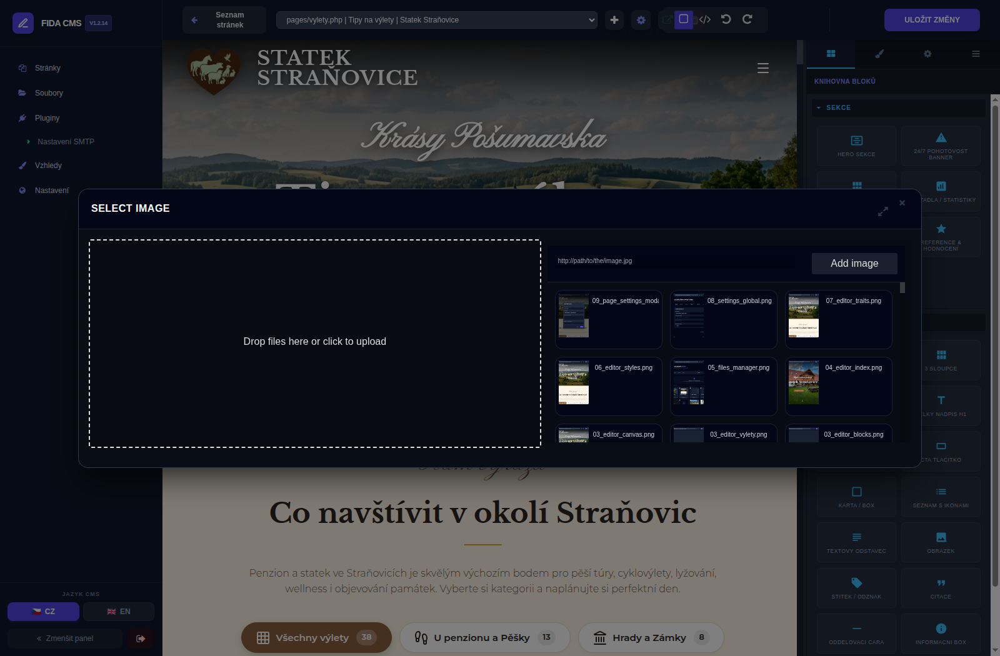
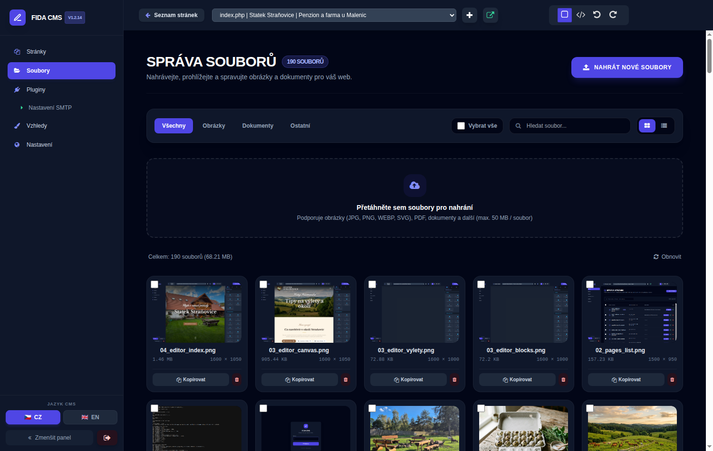
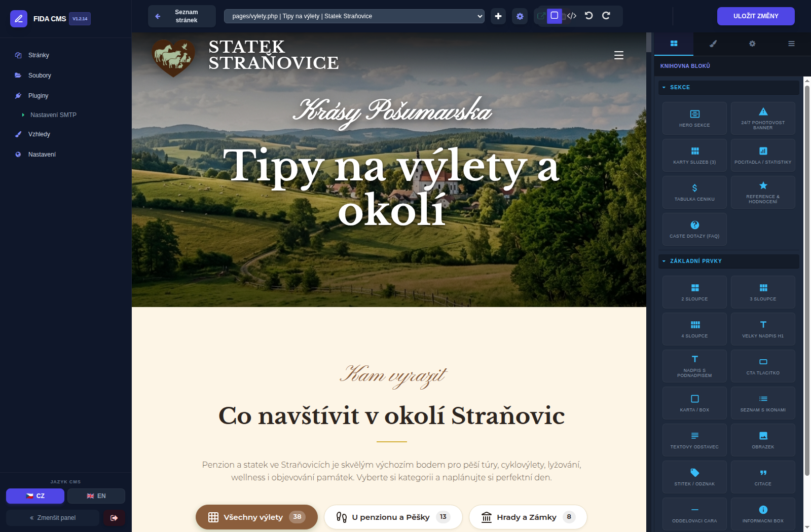
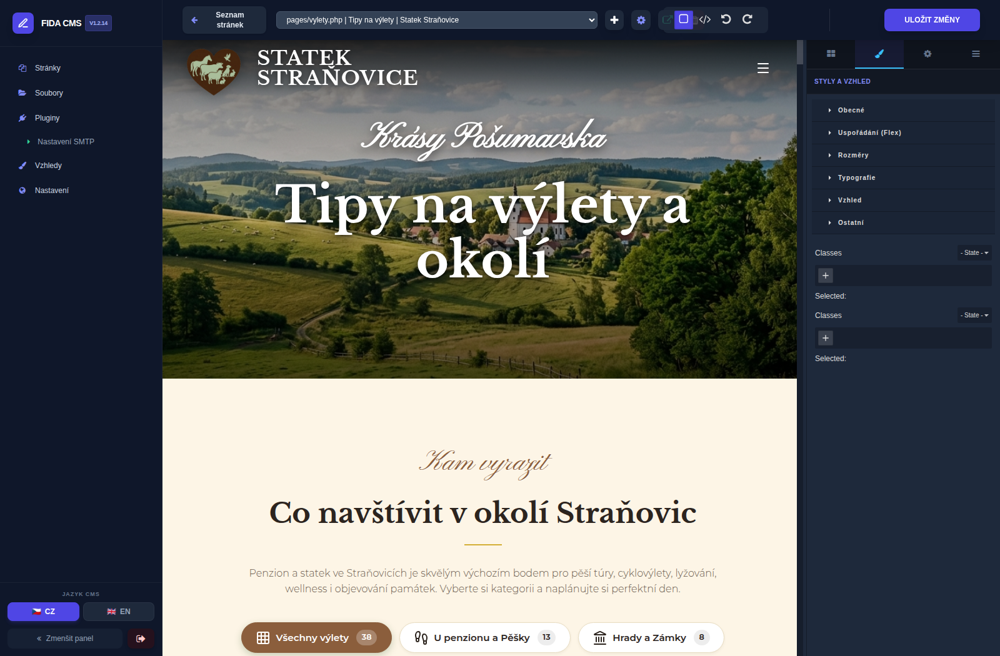
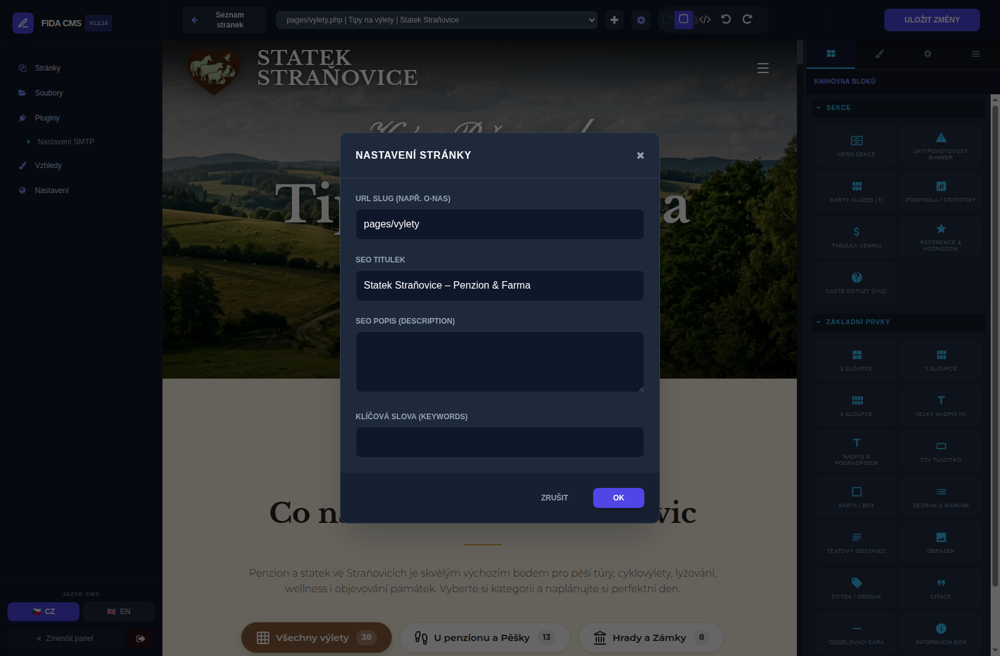

Zlaté pravidlo: Nemůžete nic pokazit!
Dokud nekliknete vpravo nahoře na velké modré tlačítko „ULOŽIT ZMĚNY“, na živém webu se nic nezmění. Pokud se vám cokoliv nepovede, stačí stisknout klávesovou zkratku Ctrl + Z (nebo kliknout na šipku zpět v liště), případně stránku obnovit v prohlížeči (klávesa F5).
Přihlášení do administrace
Jak se bezpečně dostat k úpravám vašeho webu
- V internetovém prohlížeči (Chrome, Firefox, Safari apod.) otevřete adresu vašeho webu s koncovkou /admin/ (např.
vasweb.cz/admin/). - Zobrazí se tmavá přihlašovací obrazovka Fida CMS.
- Do políčka Heslo vepište vaše administrátorské heslo.
- Klikněte na modré tlačítko Přihlásit se (nebo stiskněte klávesu Enter).

Přehled stránek a výběr stránky k úpravě
Kde najdete všechny podstránky vašeho webu
Po přihlášení se otevře Správa stránek. Zde vidíte seznam všech stránek (například Hlavní strana, Pokoje, Apartmány, Výlety, O nás, Galerie, Kontakt).
Otevře danou stránku ve vizuálním editoru, kde můžete klikat na texty a fotky.
Otevře novou záložku a ukáže vám, jak stránka vypadá přímo pro návštěvníky webu.
Vytvoří novou čistou podstránku připravenou k naplnění obsahem.

Vizuální editor: Jak jednoduše přepsat text
Úprava nadpisů, odstavců, cen a kontaktů přímo na stránce
Jakmile kliknete u libovolné stránky na „Upravit“, načte se interaktivní editor:
Ať už jde o hlavní nadpis, popis pokoje, otevírací dobu nebo cenu – dvakrát na něj klikněte myší. Okolo textu se objeví rámeček a blikající kurzor.
Můžete mazat klávesou Backspace, psát nová slova nebo vložit zkopírovaný text klávesami Ctrl + V.
Jakmile kliknete mimo upravovaný text, změna se potvrdí a zůstane přepsaná.

Jak vyměnit fotografii nebo obrázek
Nahrání nové fotky z vašeho počítače a její okamžité vložení
Výměna fotografie je velmi jednoduchá a rychlá:
- V editoru dvakrát rychle klikněte na fotku, kterou chcete vyměnit (nebo na ni klikněte a v pravém panelu zvolte ozubené kolečko).
- Otevře se okno „SELECT IMAGE / SPRÁVA OBRÁZKŮ“.
- Vlevo uvidíte velkou přerušovanou plochu „Drop files here or click to upload“.
- Jednoduše chytněte novou fotku myší ze své složky v počítači a přetáhněte ji sem (Drag & Drop), nebo na plochu klikněte a vyberte soubor.
- Obrázek se ihned nahraje a zobrazí v galerii. Klikněte na něj a fotka na stránce se okamžitě vymění za novou!

Pokud chcete nahrát větší množství fotek dopředu (např. celou novou fotogalerii), můžete v levém hlavním menu kliknout na položku „Soubory“. Tam můžete pohodlně nahrávat desítky obrázků naráz, mazat staré fotky nebo filtrovat jen dokumenty (PDF ceníky apod.).

Knihovna bloků: Přidání nového odstavce nebo sekce
Přetahování připravených designových prvků na stránku myší
Na pravé straně obrazovky editoru máte sloupec se záložkami. První ikona (čtverečky) představuje Knihovnu bloků.
Kompletní sekce
Předpřipravené velké bloky: Hero uvítací sekce, Havarijní banner, Karty služeb, Ceníkové tabulky, Reference hostů, Často kladené dotazy (FAQ).
Základní prvky
Jednotlivé stavební kameny: Velký nadpis H1, Textový odstavec, Samostatný obrázek, Tlačítko (CTA), 2 sloupce, 3 sloupce, Oddělovací čára.
Najděte požadovaný blok v pravém panelu, stiskněte levé tlačítko myši a přetáhněte blok doprostřed obrazovky na místo, kde ho chcete mít. Až se objeví zelená vodicí čára, myš pusťte.

Druhá záložka: Změna velikosti písma, barev a odsazení (Styly)
Pokud na cokoliv kliknete a přepnete vpravo na záložku štětce (Styly a vzhled), můžete měnit barvu textu, pozadí, velikost písma či vnější/vnitřní okraje.

Co dělat, když se něco nepovede? (Záchranná brzda)
Kroky zpět a rychlé vrácení do původního stavu
1. Tlačítko Zpět
Přímo v horní tmavé liště editoru je zahnutá šipka doleva (Undo). Klikněte na ni tolikrát, kolik kroků zpět se potřebujete vrátit.
2. Tlačítko Znovu
Pokud jste se vrátili moc zpět a chcete krok vrátit dopředu, použijte šipku doprava (Redo).
3. Obnovení stránky (F5)
Pokud jste provedli úpravy, které nechcete a zamotali jste se, neklikejte na Uložit, ale jednoduše stiskněte klávesu F5 (obnovit stránku). Web se znovu načte v původním stavu před úpravami.
Uložení změn a kontrola na ostrém webu
Poslední krok: jak poslat změny k vašim zákazníkům
Jakmile jste se všemi úpravami textů a obrázků spokojeni, je nutné změny zapsat na server:
Klikněte na tlačítko „ULOŽIT ZMĚNY“
Nachází se v pravém horním rohu obrazovky. Po kliknutí se na tlačítku roztočí kolečko „Ukládám...“ a v pravém dolním rohu vyskočí zelené potvrzení „Úspěšně uloženo!“.
Jak zkontrolovat, jak stránka vypadá?
Přímo vedle názvu stránky v horní liště klikněte na malou ikonu čtverečku se šipkou (nebo vlevo nahoře na tlačítko „Seznam stránek“ a zelenou ikonku oka). Otevře se ostrá verze vašeho webu, kde si můžete ihned prohlédnout výsledek!
Nastavení stránky: Titulek pro Google a Seznam (SEO)
Jak nastavit název a popis stránky, který lidé vidí ve vyhledávači
V horní liště editoru klikněte na ikonku ozubeného kolečka . Otevře se okno Nastavení stránky:
- SEO Titulek: Hlavní název stránky, který se zobrazuje v záložce prohlížeče a jako velký modrý odkaz na Google a Seznamu (např. Tipy na výlety | Statek Straňovice).
- SEO Popis (Description): 1 až 2 věty shrnující obsah stránky, které se zobrazují pod odkazem ve vyhledávači.
-
URL Slug: Internetová adresa stránky za lomítkem (např.
tipy-na-vylety).

Rychlý tahák nejčastějších úkonů (Do kapsy)
Dvakrát klikněte na text na obrazovce, přepište ho a klikněte mimo. Na závěr klikněte na ULOŽIT ZMĚNY.
Dvakrát klikněte na fotku na stránce, přetáhněte novou fotku myší z počítače do okna a klikněte na ni.
Stiskněte Ctrl + Z nebo klikněte na šipku zpět v horní liště. Případně stiskněte F5 a nic neukládejte.
V horní liště klikněte na ikonku se šipkou , která otevře váš web tak, jak ho vidí návštěvníci.